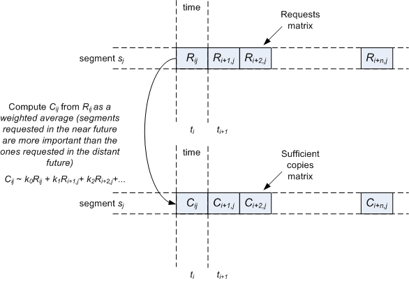

.png) fig.2.
fig.2.  - uniform content.png)
In order to identify the shorcoming of our original implementation, we propose an approach similar to the paper from NOSSDAV '08 (as we discussed earlier, our proposal is different from theirs, since they focus on on-demand replication):
a) Identifying the fraction for each type of cache miss reason (such as new content, peer departure, content replacement, bandwidth)
I am implementing in the current simulator a set of new data structures that store a limited history of the cache (subject to available memory) to pinpoint the cause of cache misses. In order to properly breakdown these causes, we have to expand the current VoD workload to include peer behavior (i.e. churn) and allocation of video sessions to peers.
For example, in our earlier submission, we did not consider peer churn resulting in an always availabe cache space. On the other hand, the authors of the '08 paper identify peer departures as the major reason for cache misses. I'm not sure how this may alter the balance between our algorithm and other caching strategies like LRU. We should discuss how to include peer churn and sessior-to-peer mapping, that is not available in the current workload (see below, in the Workload section, some ideas I already implemented). In any event, making such a balance of cache misses will offer some insight on why our algorithm performs poorly in certain situations (e.g. the content was not cached because it didn't meet the popularity criterion, it was replaced or peers had insufficient bandwidth).
Data from previous simulations shows that the replacement policy was the major factor in cache misses (bandwidth had a lesser effect).
b) Finding a close-to-optimal solution and evaluate the performance of PVC with respect to that
This idea only give an extra dimension for the comparison of our results (presumably, this should be better than LRU, LFU etc). It probably won't give too many clues on how the PVC algorithm should be implemented, but at most can tell us what is peer "local-view" of the content popularity in the best case (i.e. answering to the question: if peers take caching decisions that lead to an quasi-optimal solution for the cache utilization, would the local-view of the content popularity give the same decision? if not, what are the causes: the local knowledge is insufficient - we need information from other peers; the thresholds we are currently using are too restrictive).
Our idea is to use a heuristic Greedy algorithm to find the best cache utilization. The algorithm relies on the full knowledge of the workload on estimation of local optimum that (hopefully) will converge toward a global optimum. It considers of two 3D matrices, with one dimension time, the other video segments (the granularity is second-segment), and two steps: (i) populating the matrix A with the number of future requests based on the workload, and (ii) iteratively populating matrix B with the number of sufficient cache copies to accomodate future requests - this is the local optimum. One key issue consists in translating future requests to sufficient cache copies - ideally, this should be done according to a set of constraints (e.g. matrix C dependent on A and B) such as bandwidth (for now I'm still thinking how to factor in additional constraints such as bandwidth). Alternatively, we may employ a simpler linear function between future requests and needed copies (discuss whether this function should be linear).

Depending on how we include the peer churn in the workload, we can add an additional matrix that gives the peer availability, which can be used as a factor in determining the number of copies.
This algorithm relies on future knowledge to estimate the best cache decision (at the end, we would have to test if the solution converges toward an optimum or nor - I am thinking of some iterative test, but still working on it). By comparison, cache decisions in PVC relies on past knowledge. We can verify the type of correlation that exists between the two.
For now, my thoughts on an analytical approach include the previous matrix-based analysis. It seems to me that this a hard problem (in addition that it relies on future infromation). I'm not sure on whether we can extract some kind of correlation between future (i.e. optimal) and past behavior, and than link the past behavior to peer's view of it, we can justify the intuition for PVC (even if it's a model that it's solved by an heuristic).
Not an open issue, but rather an overview of synthetic workload generated with Medisyn. We can use it, to identify certain aspects that we want to alter, or region of the workload were we collect results.
In particular, due to the skewed nature of the synthetic workload, peer allocation cannot be unform: there are fewer idle peers during the peak demand, and many idle peers during the long tail. This will force us to consider a peer churn pattern that follows the workload.
The Medisyn workload does not give a mapping between users and each session, nor does it say when new users arrive and leave (it is based on server traces). For this reason, in order to use it in a P2P scenario, we have to add the following:
- assigning a peer to a give session (i.e. content consumption perspective)
- including peer churn (i.e. cache and cached content availability perspective)
For now, I implemented the following simple steps of assigning peers to sessions:
a) First, for a given workload we can calculate the minimum number of peers that are necessary to satisfy the peak demand (using default values for the number of files, content popularity etc, for now this number is typical several hundreds)
b) Allocate peers to sessions using:
b.1.) an uniform distribution, i.e. the same approach as in our NOSSDAV submission. This results in a skewed distribution of content across peers (because the number of sessions is uniformly distributed but not the amount of video content, unless all sessions have the same duration) - fig. 1.
b.2) I have to look whether there are any studies on what is a typical distribution of content usage in VoD, because content usage by peers might be different. For now, I implemented a simple scheme that distributes content more even across peers (fig. 2).
For now, I did not include peer churn. As Reza and Mohamed suggested we can apply one of the previous studies on peer churn in file sharing (e.g. Reza's paper from Sigcomm'06, there is another study on KAD from Institut Eurecom). The key issue in putting this into practice will be to match the churn with peer-to-session allocation: my idea is to begin with the churn and then allocate peers to sessions (by imposing the restriction that the session should fit to or better match the peer lifetime). I still have to study however how this churn models can be adjusted to fit the shape of the workload, i.e. the peer arrival/departure rate to follow the envelope of the session rate. For example, on small time scales, the synthetic Medisyn workload has diurnal variations with high demand in the evening, on large time scales, there are peak demands when very popular content is introduced.
Traces from Thomas Silverston (for IPTV not VoD: Sopcast), crawl YouTube (some prelimary results: crawling possible, but information not accurate on small time scales - less than 1-2 hours, and need to filter errors in replies), other possible sources?
[New changes to the simulator]
See roadmap [to do]